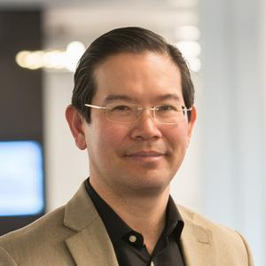
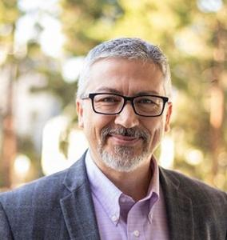
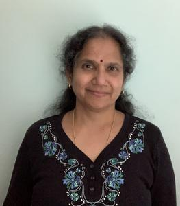

Main Conference Program
- October 8: Tutorials and Workshops Day 1
- October 9: Tutorials and Workshops Day 2
- October 10: Main Conference Day 1
- October 11: Main Conference Day 2
-
DPI below refers to the Discovery Partners Institute, on the fourth floor of 200 S. Wacker Drive, Chicago, IL.
- IC below refers to the Illini Center, on the 19th floor of 200 S. Wacker Drive, Chicago, IL.
Monday, October 10, 2022
Back to navigation| Time | What | Where |
| 7:30 | Registration opens Please allow sufficient time to clear building security. See here for instructions. |
DPI |
| 7:30–8:20 | Continental Breakfast | Discovery Room, DPI |
| 8:20–8:30 | Welcome from the Chairs | Discovery Room, DPI |
| 8:30–9:30 | Keynote: Closing the Gap between Quantum Algorithms and Machines with Hardware-Software Co-Design | Discovery Room, DPI |
| 9:30–10:00 | Coffee Break | Discovery Room, DPI |
| 10:00–12:00 |
Track 1: Compilers for ever Session Chair: Nelson Amaral
|
Discovery Room, DPI |
| 10:00–12:00 |
Track 2: Optimizing the execution of GNNs Session Chair: Antonino Tumeo
|
Orange & Blue Room, IC |
| 12:00–13:30 | Lunch | (Attendees on their own) |
| 12:30–13:30 | Steering Committee Meeting | Illini Room, IC |
| 13:30–15:00 |
Track 1: Getting more out of your memory Session Chair: Jose Moreira
|
Discovery Room, DPI |
| 13:30–15:00 |
Track 2: Sparse matrix computations Session Chair: Gagan Agrawal
|
Orange & Blue Room, IC |
| 15:00–15:30 | Coffee Break | Discovery Room, DPI |
| 15:30–17:00 |
Track 1: Graph processing Session Chair: Vivek Sarkar
|
Discovery Room, DPI |
| 15:30–17:00 |
Track 2: Miscellaneous Session Chair: Jose Moreira
|
Orange & Blue Room, IC |
| 17:00–19:00 | Poster Session / Reception | Classroom B, DPI |
Keynote: Closing the Gap between Quantum Algorithms and Machines with Hardware-Software Co-Design
Fred Chong (Department of Computer Science, University of Chicago, Chicago, IL)
Quantum computing is at an inflection point, where 127-qubit machines are deployed, and 1000-qubit machines are perhaps only a few years away. These machines have the potential to fundamentally change our concept of what is computable and demonstrate practical applications in areas such as quantum chemistry, optimization, and quantum simulation. Yet a significant resource gap remains between practical quantum algorithms and real machines. A promising approach to closing this gap is to design software that is aware of the key physical properties of emerging quantum technologies. I will illustrate this approach with some of our recent work that focuses on techniques that break traditional abstractions and inform hardware design, including compiling programs directly to analog control pulses, computing with ternary quantum bits, 2.5D architectures for surface codes, and exploiting long-distance communication and tolerating atom loss in neutral-atom machines.

Fred Chong is the Seymour Goodman Professor in the Department of Computer Science at the University of Chicago and the Chief Scientist for Quantum Software at ColdQuanta. He is also Lead Principal Investigator for the EPiQC Project (Enabling Practical-scale Quantum Computing), an NSF Expedition in Computing. Chong is a member of the National Quantum Advisory Committee (NQIAC) which provides advice to the President and Secretary of Energy on the National Quantum Initiative Program. In 2020, he co-founded Super.tech, a quantum software company, which was acquired by ColdQuanta in 2022. Chong received his Ph.D. from MIT in 1996 and was a faculty member and Chancellor's fellow at UC Davis from 1997-2005. He was also a Professor of Computer Science, Director of Computer Engineering, and Director of the Greenscale Center for Energy-Efficient Computing at UCSB from 2005-2015. He is a recipient of the NSF CAREER award, the Intel Outstanding Researcher Award, and 13 best paper awards.
Tuesday, October 11, 2022
Back to navigation| Time | What | Where |
| 7:30 | Registration opens Please allow sufficient time to clear building security. See here for instructions. |
DPI |
| 7:30–8:25 | Continental Breakfast | Discovery Room, DPI |
| 8:25–8:30 | PACT 2023 in Vienna: A Preview | Discovery Room, DPI |
| 8:30–9:30 | Keynote: MemComputing: Fundamentals and Applications | Discovery Room, DPI |
| 9:30–10:00 | Coffee Break | Discovery Room, DPI |
| 10:00–12:00 | ACM SRC Poster Session | Discovery Room, DPI |
| 10:00–12:00 |
Track 1: Better neural networks Session Chair: Jose Cano Reyes
|
Orange & Blue Room, IC |
| 12:00–13:30 | Lunch | (Attendees on their own) |
| 13:30–15:00 |
Track 1: Getting more out of your GPU Session Chair: Perry Gibson
|
Discovery Room, DPI |
| 13:30–15:00 |
Track 2: Better hardware Session Chair: Sushant Kondguli
|
Orange & Blue Room, IC |
| 15:00–15:30 | Coffee Break | Discovery Room, DPI |
| 15:30–16:30 |
Track 1: Task parallelism Session Chair: Santosh Pande
|
Discovery Room, DPI |
| 15:30–16:30 |
Track 2: Optimization Session Chair: Nicolas Agostini
|
Orange & Blue Room, IC |
| 16:30–17:00 | Travel to boat dock The dock is a 30-minute walk from DPI. Please make sure to allow sufficient time. |
(Attendees on their own) |
| 17:00–20:30 | Banquet / Excursion: Architecture Boat Tour (boarding starts 17:15, vessel departs 17:30 sharp) | Wendella West Dock 4 |
Keynote: MemComputing: Fundamentals and Applications
Massimiliano Di Ventra (Department of Physics, University of California San Diego, La Jolla, CA)
MemComputing is a new physics-based approach to computation that employs time non-locality (memory) to both process and store information on the same physical location. (M. Di Ventra, MemComputing: Fundamentals and Applications, Oxford University Press, 2022.) Its digital version is designed to solve combinatorial optimization problems. A practical realization of digital memcomputing machines (DMMs) can be accomplished via circuits of non-linear dynamical systems with memory engineered so that periodic orbits and chaos can be avoided. A given logic (or algebraic) problem is first mapped into this type of dynamical system whose point attractors represent the solutions of the original problem. A DMM then finds the solution via a succession of elementary avalanches (instantons) whose role is to eliminate configurations of logical inconsistency ("logical defects") from the circuit. I will discuss the physics behind MemComputing and show many examples of its applicability to various combinatorial optimization problems, Machine Learning, and Quantum Mechanics, demonstrating its advantages over traditional approaches and even quantum computing. Work supported by DARPA, DOE, NSF, CMRR, and MemComputing, Inc.

Massimiliano Di Ventra obtained his undergraduate degree in Physics summa cum laude from the University of Trieste (Italy) in 1991 and did his PhD studies at the Swiss Federal Institute of Technology in Lausanne in 1993-1997. He is now professor of Physics at the University of California, San Diego. Di Ventra's research interests are in condensed-matter theory and unconventional computing. He has been invited to deliver more than 300 talks worldwide on these topics. He has published more than 200 papers in refereed journals, 4 textbooks, and has 7 granted patents (3 foreign). He is a fellow of the IEEE, the American Physical Society, the Institute of Physics, and a foreign member of Academia Europaea. In 2018 he was named Highly Cited Researcher by Clarivate Analytics, he is the recipient of the 2020 Feynman Prize for theory in Nanotechnology, and is a 2022 IEEE Nanotechnology Council Distinguished Lecturer. He is the co-founder of MemComputing, Inc.
Wednesday, October 12, 2022
Back to navigation| Time | What | Where |
| 7:30 | Registration opens Please allow sufficient time to clear building security. See here for instructions. |
DPI |
| 7:30–8:30 | Continental Breakfast | Discovery Room, DPI |
| 8:30–9:30 | Keynote: AI Acceleration: Co-optimizing Algorithms, Hardware, and Software | Discovery Room, DPI |
| 9:30–10:30 |
Talks: ACM SRC Finalists
|
Discovery Room, DPI |
| 10:30–11:00 | Coffee Break | Discovery Room, DPI |
| 11:00–12:30 |
Track 1: GPU algorithms Session Chair: Jose Moreira
|
Discovery Room, DPI |
| 11:00–12:30 |
Track 2: Portable performance Session Chair: P. Sadayappan
|
Orange & Blue Room, IC |
| 12:30–12:45 | Conference Closing | Discovery Room, DPI |
Keynote: AI Acceleration: Co-optimizing Algorithms, Hardware, and Software
Vijayalakshmi Srinivasan (IBM Research, Yorktown Heights, NY)
The combination of growth in compute capabilities and availability of large datasets has led to a re-birth of deep learning. Deep Neural Networks (DNNs) have become state-of-the-art in a variety of machine learning tasks spanning domains across vision, speech, and machine translation. Deep Learning (DL) achieves high accuracy in these tasks at the expense of 100s of ExaOps of computation. Hardware specialization and acceleration is a key enabler to improve operational efficiency of DNNs, in turn requiring synergistic cross-layer design across algorithms, hardware, and software.
In this talk I will present this holistic approach adopted in the design of a multi-TOPs AI hardware accelerator. Key advances in the AI algorithm/application-level exploiting approximate computing techniques enable deriving low-precision DNNs models that maintain the same level of accuracy. Hardware performance-aware design space exploration is critical during compilation to map DNNs with diverse computational characteristics systematically and optimally while preserving familiar programming and user interfaces. The opportunities to co-optimize the algorithms, hardware, and the software provides the roadmap to continue to deliver superior performance over the next decade.

Viji Srinivasan is a Distinguished Research Staff Member and a manager of the accelerator architectures and compilers group at the IBM T.J. Watson Research Center in Yorktown Heights. At IBM, she has worked on various aspects of data management including energy-efficient processor designs, microarchitecture of the memory hierarchies of large-scale servers, cache coherence management of symmetric multiprocessors, accelerators for data analytics applications and more recently end-to-end accelerator solutions for AI. Many of her research contributions have been incorporated into IBM's Power and System-z Enterprise-class servers.
Important Dates and Deadlines
Conference Papers:
Abstracts: April 18, 2022Full Papers: April 25, 2022Round 1 Rebuttal: June 6–9, 2022Round 2 Rebuttal: July 11–14, 2022Author Notification: July 29, 2022Camera Ready Papers: August 26, 2022
Posters:
Poster Submission Deadline: September 1, 2022Author Notification: September 15, 2022Extended Abstract: September 29, 2022Poster Session: October 10, 2022
ACM Student Research Competition:
Abstract Submission Deadline: September 8, 2022Author Notification: September 16, 2022SRC Poster Session: October 11, 2022SRC Finalist Presentations: October 12, 2022
Application Deadline: October 5, 2022
Workshops and Tutorials:
- Workshops/Tutorials: October 8–9, 2022
Conference: October 10–12, 2022
Previous PACTs
- PACT21 (proceedings)
- PACT20 (proceedings)
- PACT19 (proceedings)
- PACT18 (proceedings)
- PACT17 (proceedings)
- PACT16 (proceedings),
- PACT15 (proceedings)
- PACT14 (proceedings)
Earlier PACTs
Sponsors
Platinum

Gold

Supporters


Academic